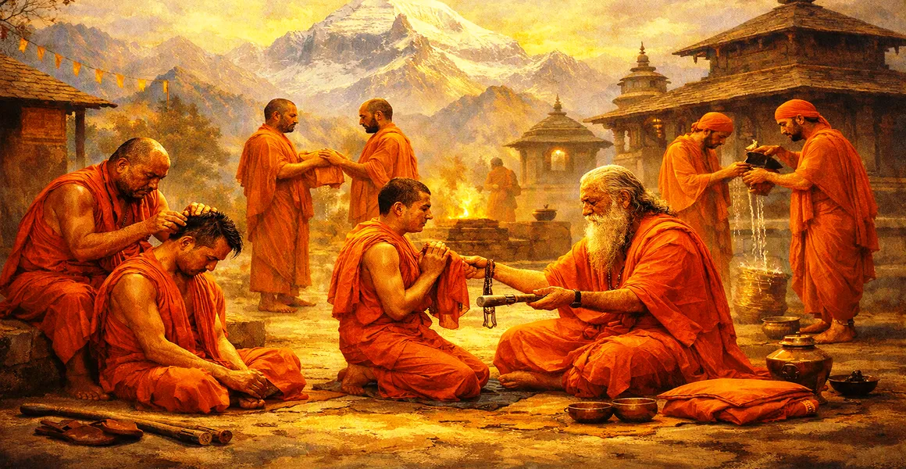

संन्यास की प्रक्रिया
कैलाश संहिता के बारहवें अध्याय में मठवासी त्याग (संन्यास) में औपचारिक दीक्षा के लिए पवित्र नियमों, अनुष्ठानों और मानसिक पूर्वापेक्षाओं का विवरण दिया गया है।
ऋषि सुता बताते हैं कि कैसे एक समर्पित साधक घरेलू कर्तव्यों से पूर्ण स्वतंत्रता और भगवान शिव के प्रति पूर्ण समर्पण के मार्ग पर परिवर्तित होता है।
यह अध्याय उच्च दार्शनिक बोध को व्यावहारिक मठवासी अनुशासन के साथ जोड़ता है।
अध्याय 12 की मुख्य बातें
संन्यास के लिए पात्रता
एक साधक के लिए आवश्यक मानसिक शुद्धता, वैराग्य और तत्परता को परिभाषित करता है।
अनुष्ठान अग्नि का त्याग
बाहरी यज्ञ अग्नि को अपनी आंतरिक चेतना में स्थानांतरित करने के अनुष्ठान का विवरण।
पवित्र परिधान और निशान
गेरुआ वस्त्र पहनने, सिर मुंडवाने और लाठी ले जाने का महत्व बताते हैं।
आंतरिक त्याग
इस बात पर जोर दिया गया कि अहंकार, क्रोध और सांसारिक स्वामित्व का पूर्ण त्याग ही सच्चा संन्यास है।
शिव को समर्पण
त्यागी के संपूर्ण जीवन को महादेव और अद्वैत ज्ञान के ध्यान की ओर निर्देशित करता है।
अगले चरण की तैयारी
अध्याय 13 में त्याग के गहरे आयामों की खोज के लिए मंच तैयार करता है।
इस अध्याय में मुख्य विषय
संन्यास के लिए पूर्वापेक्षाएँ और पात्रता
ऋषि सुता बताते हैं कि संन्यास चंचल दिमाग वालों के लिए नहीं है, बल्कि उन लोगों के लिए है जिन्होंने सांसारिक भोगों के प्रति गहरा वैराग्य (वैराग्य) विकसित कर लिया है।
उम्मीदवार के पास इंद्रियों पर नियंत्रण, शुद्ध बुद्धि और मुक्ति (मुमुक्षुत्व) की तीव्र इच्छा होनी चाहिए।
पवित्र अग्नि के त्याग का अनुष्ठान
मठवासी जीवन में प्रवेश करने से पहले एक आवश्यक संस्कार बाहरी अनुष्ठान अग्नि का स्वयं में औपचारिक त्याग है।
यह बाहरी कर्मकांडीय पूजा से जागरूकता और आत्म-बोध की आंतरिक अग्नि की ओर स्थानांतरित होने का प्रतीक है।
मठवासी दीक्षा के पवित्र संस्कार
अध्याय में दीक्षा के दौरान गुरु द्वारा किए गए विशिष्ट मंत्रों, प्रार्थनाओं और शुद्धिकरण संस्कारों की रूपरेखा दी गई है।
साधक सभी सामाजिक बंधनों से मुक्ति की घोषणा करता है, मन, शब्द या कर्म से किसी भी जीवित प्राणी को कोई नुकसान नहीं पहुंचाने की कसम खाता है।
गेरू वस्त्र एवं दण्ड का महत्त्व
गेरुआ रंग का वस्त्र पहनना पवित्रता, त्याग और ज्ञान की अग्नि द्वारा अशुद्धियों को जलाने का प्रतीक है।
लाठी (डंडा) धारण करना वाणी, मन और शरीर पर नियंत्रण का प्रतिनिधित्व करता है, सभी कार्यों को परम सत्य की सेवा में समर्पित करता है।
संन्यासी के दैनिक आचरण एवं कर्तव्य
सुता ने घूमने, एकांत में रहने, ध्यान का अभ्यास करने और जीविका के लिए साधारण भिक्षा लेने के नियमों का विवरण दिया है।
संन्यासी हर जगह भगवान शिव को देखकर स्तुति या निंदा में समभाव रखता है।
विधिपूर्वक त्याग का उत्तम फल
ईमानदारी और बुद्धिमत्ता से किया गया सच्चा संन्यास पुनर्जन्म की जड़ को काट देता है और सभी संचित कर्मों को नष्ट कर देता है।
भिक्षु को परम शांति प्राप्त होती है और वह दिव्य चेतना के असीम सागर में विलीन हो जाता है।
अध्याय 13 की ओर
अध्याय 12 में संन्यास की प्रक्रिया स्थापित करने के बाद, ऋषि सूत ने अध्याय 13, 'त्याग की प्रक्रिया' का परिचय दिया।
अध्याय 13 त्याग की दार्शनिक बारीकियों और पूर्ण मुक्ति की ओर ले जाने वाली वैराग्य की अंतिम अवस्थाओं पर गहराई से प्रकाश डालता है।
अध्याय 12 की मुख्य शिक्षाएँ
सच्चा वैराग्य
त्याग आंतरिक परिपक्वता और सांसारिक भ्रमों से वास्तविक वैराग्य से उत्पन्न होना चाहिए।
आग को आंतरिक बनाना
बाह्य अनुष्ठानिक यज्ञों से सर्वोच्च प्रकाश के आंतरिक ध्यान की ओर बढ़ना।
प्रतीकात्मक पवित्रता
गेरुआ वस्त्र और कर्मचारी पूर्ण समर्पण और हानिरहितता की याद दिलाते हैं।
इंद्रिय नियंत्रण
मठवासी जीवन के लिए वाणी, मन और कार्यों पर निपुणता आवश्यक है।
सार्वभौमिक प्रेम
एक सच्चा संन्यासी सभी प्राणियों को समान दया की दृष्टि से देखता है और सभी में शिव को देखता है।
परम स्वतंत्रता
औपचारिक त्याग शाश्वत शांति और मुक्ति का स्पष्ट मार्ग प्रशस्त करता है।
आध्यात्मिक चिंतन
संन्यास केवल वस्त्र परिवर्तन नहीं है, बल्कि चेतना का आमूल-चूल परिवर्तन है। क्षुद्र आसक्तियों और बाहरी प्रतिभूतियों को त्यागकर, साधक को भगवान शिव की अनंत उपस्थिति में एक अटल आश्रय मिलता है।
अध्याय 12 का संदेश जीना
ईमानदारी के साथ दैनिक जिम्मेदारियों को पूरा करते हुए भौतिक संपत्ति से मानसिक अलगाव पैदा करें।
मन को शांत और एकाग्र रखने के लिए वाणी, आहार और कार्यों में संयम बरतें।
महादेव के साथ परम एकता को याद करने के लिए शांत चिंतन के क्षण समर्पित करें।
प्रमुख आध्यात्मिक अवधारणाएँ
मठवासी दीक्षा को नियंत्रित करने वाले पवित्र शास्त्र संबंधी नियम और अनुष्ठान।
बाहरी यज्ञ अग्नियों को अपने आंतरिक अस्तित्व में विलीन करने का अनुष्ठान।
कर्मचारियों की स्वीकृति, नियंत्रण और हानिरहितता का प्रतीक है।
वैराग्य का कठोर अभ्यास और मायावी सुखों से दूर रहना।
अहंकार और स्वामित्व को मिटाने के लिए साधारण भिक्षा पर जीवन यापन करने का अभ्यास।
पूर्ण त्याग और दिव्य ज्ञान के माध्यम से प्राप्त परम मुक्ति।
अध्याय सारांश
कैलाश संहिता अध्याय 12 संन्यास की प्रक्रिया प्रस्तुत करता है। आंतरिक योग्यताओं, पवित्र अग्नि के अनुष्ठान त्याग, गेरुआ वस्त्र और कर्मचारियों को अपनाने और मठवासी कर्तव्यों का विवरण देते हुए, यह अध्याय साधकों को औपचारिक त्याग पर मार्गदर्शन करता है। यह पूर्ण स्वतंत्रता के लिए एक मजबूत व्यावहारिक आधार स्थापित करता है, पाठक को अध्याय 13, 'त्याग की प्रक्रिया' के लिए तैयार करता है।
अक्सर पूछे जाने वाले प्रश्न
1. कैलास संहिता अध्याय 12 का प्राथमिक विषय क्या है?
अध्याय 12 संन्यास (मठवासी त्याग) में प्रवेश के लिए आवश्यक पवित्र नियमों, अनुष्ठानों और मानसिक योग्यताओं की रूपरेखा देता है।
2. इस अध्याय के अनुसार संन्यास लेने के लिए कौन योग्य है?
जिन साधकों ने गहन वैराग्य विकसित किया है, भक्ति के माध्यम से अपने मन को शुद्ध किया है और सांसारिक इच्छाओं पर विजय प्राप्त की है, वे संन्यास के लिए योग्य हैं।
3. संन्यास लेने में कौन से अनुष्ठान शामिल हैं?
इस प्रक्रिया में सांसारिक अग्नि को त्यागना, पवित्र अंतिम बलिदान देना, बाल मुंडवाना, गेरुआ वस्त्र अपनाना और छड़ी (डंडा) प्राप्त करना शामिल है।
4. संन्यास का आंतरिक महत्व क्या है?
बाहरी आवरण से परे, सच्चा संन्यास अहंकार, स्वामित्व और द्वैतवादी लगाव के पूर्ण मानसिक परित्याग का प्रतिनिधित्व करता है।
5. अध्याय 12 अध्याय 11 में ऋषि वामदेव की कहानी से कैसे जुड़ता है?
जबकि अध्याय 11 ने आंतरिक अहसास के शिखर को दिखाया, अध्याय 12 उस स्थिति को विकसित करने के लिए मठवासी अनुशासन का व्यावहारिक, औपचारिक मार्ग प्रदान करता है।
6. अध्याय 12 के बाद नेविगेशन के लिए अगला अध्याय कौन सा है?
नेविगेशन के लिए अगला अध्याय अध्याय 13 है, जिसका शीर्षक 'त्याग की प्रक्रिया' है।
"सच्चा त्याग वह अग्नि है जो सभी अहंकार और भ्रम को जला देती है, और केवल भगवान शिव की उज्ज्वल रोशनी को भीतर चमकाती छोड़ देती है।"
कैलाश संहिता के माध्यम से जारी रखें
अध्याय 12 संन्यास की प्रक्रिया का विवरण देता है। अध्याय 13, त्याग की प्रक्रिया को जारी रखें।